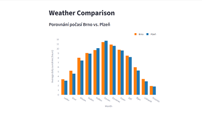
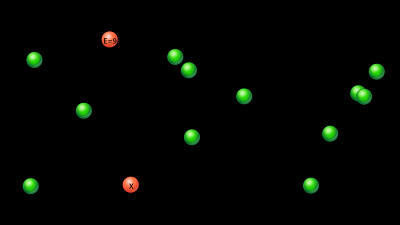
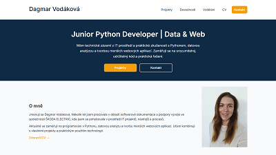

Weather Comparison App
Datově orientovaná webová aplikace pro porovnání
meteorologických údajů mezi vybranými městy v České republice.
Aktuálně se zaměřuje na porovnání délky slunečního svitu
mezi Brnem a Plzní.
Projekt demonstruje kompletní workflow od získání historických dat
z veřejného REST API přes jejich zpracování a analýzu až po
interaktivní vizualizaci a prezentaci ve webovém rozhraní.
- Python, Pandas – zpracování a analýza dat
- REST API (Open-Meteo)
- Plotly – interaktivní grafy
- Streamlit – webová prezentace aplikace
GitHub repozitář →

Click & Seek Coordinates Game
Interaktivní click-based hra v Pythonu navržená jako puzzle
komponenta pro geocaching (mystery cache).
Hráč kliká na pohybující se objekty, které mohou odhalovat
skryté zprávy a indicie.
Projekt zaměřený na procvičení herní smyčky, práce s událostmi
a návrhu jednoduché herní logiky. Důraz je kladen na čitelnost
kódu, konfigurovatelnost a možnost dalšího rozšíření.
- Python 3.10+
- Pyglet
- herní smyčka a animace
- click-based uživatelské události
- konfigurovatelné herní parametry
GitHub repozitář →

Web Portfolio
Statické vícestránkové webové portfolio sloužící
jako centrální prezentace osobních projektů,
technických dovedností a profesního profilu.
Projekt je zaměřený na návrh sémantické struktury HTML,
responzivní layout, přehlednou architekturu souborů
a publikaci webu pomocí GitHub Pages.
- HTML – sémantická struktura
- CSS – Flexbox, Grid, responzivita
- Git & GitHub Pages – verzování a deployment
- statický web bez frameworků
GitHub repozitář →